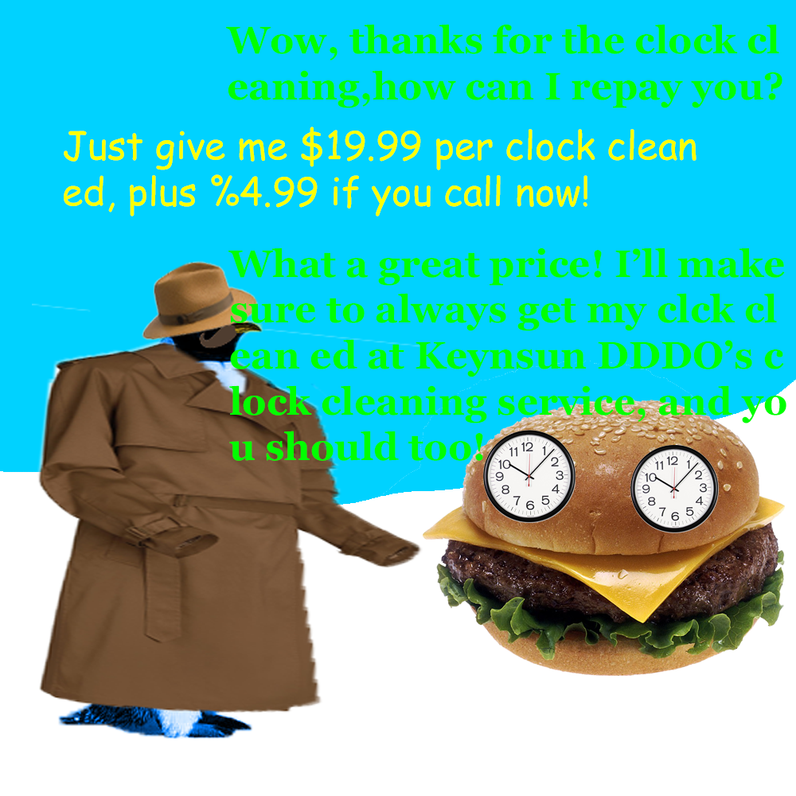

Episode 8: October 20th, 2018
Back to News Archive
| Back to Homepage | Back to Shef Werld<< Previous Episode | >> Next Episode
Shef Kerbi News Bulletin #8
PROVIDING ONLY THE BEST NEWS
Our Website
20 October 2018
Announment:
Shef Kerbi News Network now has a new website! here it is!!!1
Breaking News!!!11
The sporadic temperature changes that have been going on over the last few weeks have severely damaged Dreem Lend's farms,
which is causing a shortage especially of strawberry shortcake. The entire country is trusting that Keyn DDDD will take
proper measures to make sure that Kerbi Skweek Skwad doesn't happen again.
COMAC:


Wait hang on what that loss?????
BRAKE-ING NEWS:
Apple The Cat has woken up from a coma. The subject testifies that he "was watching the Shef Kerbi and Co. News Network and
then [he] passed out" and that "[he] now [remembers] that [he doesn't] report the whether, and [he doesn't] remember how to
spell it either." So, he decided to write some noose.
BREAKFAST NEWS:
Today there was a 🤔. Authorities are still 🤔 on whether to release 🤔 to the public. But I was a firstfoot witness BAYBEEE!!!
Basically 🤔, and then 🤔 happened. We 🤔 very hard about weather to release this to the public, but since we're obviously the
#1 policitical news chañel we decided to release the information about the 🤔, the 🤔, and the 🤔, so you know everything
about this incident! 🤔🤔🤔🤔🤔🤔🤔🤔🤔🤔🤔🤔🤔🤔
AD:

WETHAA:
Weather that's what
Today is gonna be 3cold5me with a max of 11° and a min of 7°
don't ask how the temperature keeps shifting wildly like this because i don't know either
anyway tomorrow it'll be a max of 31 and a min of 27 wait what
This news has all been 100% quality approved to federal government standards by Shef Kerbi
pls no arrest because we use MS Paint thanks
this website is best viewed with Ned's Escape